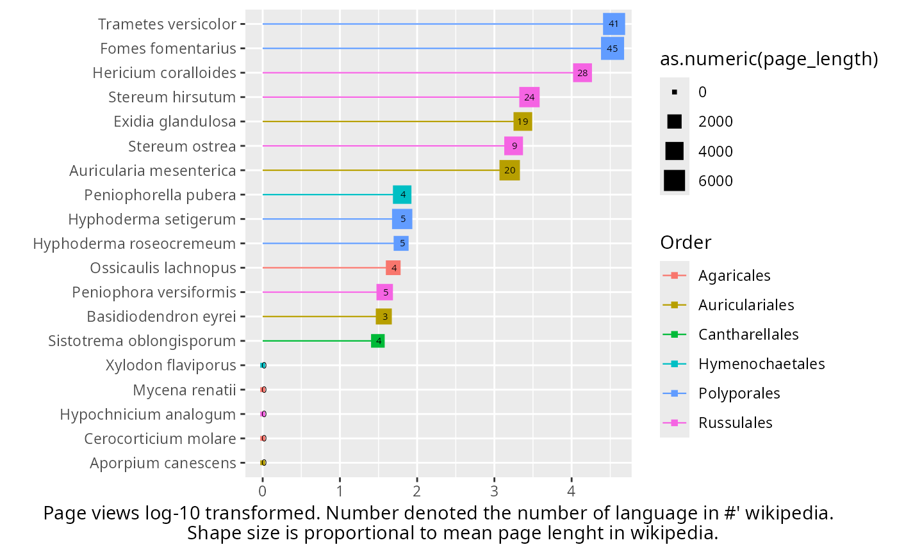

Retrieve information about taxa from wikipedia
Usage
tax_get_wk_info_pq(
physeq = NULL,
taxnames = NULL,
taxonomic_rank = "currentCanonicalSimple",
add_to_phyloseq = NULL,
col_prefix = NULL,
verbose = TRUE,
languages_pages = NULL,
time_to_sleep = 0.3,
summarize_function_length = "mean",
summarize_function_views = "sum",
n_days = 30
)Arguments
- physeq
(optional) A phyloseq object. Either `physeq` or `taxnames` must be provided, but not both.
- taxnames
(optional) A character vector of taxonomic names.
- taxonomic_rank
(Character, default = "currentCanonicalSimple") The column(s) present in the @tax_table slot of the phyloseq object. Can be a vector of two columns (e.g. the c("Genus", "Species")).
- add_to_phyloseq
(logical, default TRUE when physeq is provided, FALSE when taxnames is provided) If TRUE, a new phyloseq object is returned with new columns in the tax_table. Automatically set to TRUE when a phyloseq object is provided and FALSE when taxnames is provided. Cannot be TRUE if `taxnames` is provided.
- col_prefix
A character string to be added as a prefix to the new columns names added to the tax_table slot of the phyloseq object (default: NULL).
- verbose
(logical, default TRUE) If TRUE, prompt some messages.
- languages_pages
(Character vector or NULL, default NULL) If not NULL, only the languages present in this vector will be queried. The language codes are the two- or three-letter codes defined by ISO 639-1. For example, c("en", "fr", "de") will query only the English, French and German Wikipedia pages. If NULL (default), all languages will be queried. See https://en.wikipedia.org/wiki/List_of_Wikipedias for the list of language codes. Note that some taxa may not have pages in the specified languages. In this case, the function will return NA for these taxa.
- time_to_sleep
(numeric, default 0.3) Time to sleep between two calls to wikipedia API.
- summarize_function_length
A function to summarize the page length across languages. Default is "mean".
- summarize_function_views
A function to summarize the page views across languages. Default is "sum".
- n_days
(numeric, default 30) Number of days to consider for the page views.
Value
Either a tibble (if add_to_phyloseq = FALSE) or a new phyloseq object, if add_to_phyloseq = TRUE, with new column(s) in the tax_table. The tibble contains the following columns: - `lang`: Number of languages in which the taxon has a wikipedia page - `page_length`: Mean length of the wikipedia pages (in characters) - `page_views`: Total number of page views over the last 'n_days' days - `taxon_id`: Wikidata taxon identifier (e.g. "Q10723171" for Stereum ostrea) - `taxa_name`: Taxonomic name used to query wikipedia
Examples
data_fungi_mini_cleanNames <- gna_verifier_pq(data_fungi_mini, data_source = 210)
#> ✔ GNA verification summary:
#> • Total taxa in phyloseq: 45
#> • Taxa submitted for verification: 37
#> • Genus-level only taxa: 2
#> • Total matches found: 25
#> • Synonyms: 4 (including 4 at genus level)
#> • Accepted names: 21 (including 15 at genus level)
wk_info <- tax_get_wk_info_pq(subset_taxa_pq(
data_fungi_mini_cleanNames,
taxa_sums(data_fungi_mini_cleanNames@otu_table) > 20000
))
#> Cleaning suppress 0 taxa ( ) and 27 sample(s) ( AD26-005-B_S9_MERGED.fastq.gz / AD26-005-H_S10_MERGED.fastq.gz / ADABM30X-M_S16_MERGED.fastq.gz / B18-006-B_S19_MERGED.fastq.gz / BG7-010-H_S31_MERGED.fastq.gz / BQ4-018-M_S51_MERGED.fastq.gz / BV11-002-M_S59_MERGED.fastq.gz / CB8-019-H_S70_MERGED.fastq.gz / DJ2-008-H_S88_MERGED.fastq.gz / DS1-ABM002-B_S91_MERGED.fastq.gz / DY5-004-B_S96_MERGED.fastq.gz / DY5-004-H_S97_MERGED.fastq.gz / F6-ABM-001_S105_MERGED.fastq.gz / F7-015-M_S106_MERGED.fastq.gz / FOMES19-M_S109_MERGED.fastq.gz / J18-004-M_S116_MERGED.fastq.gz / N23-002-B_S130_MERGED.fastq.gz / NVABM-0163-H_S135_MERGED.fastq.gz / NVABM0216_S136_MERGED.fastq.gz / NVABM0244-M_S137_MERGED.fastq.gz / T28-ABM602-B_S162_MERGED.fastq.gz / W26-001-B_S165_MERGED.fastq.gz / W9-025-M_S169_MERGED.fastq.gz / X24-009-B_S170_MERGED.fastq.gz / X29-004-B_S174_MERGED.fastq.gz / Y28-002-B_S178_MERGED.fastq.gz / Z29-001-H_S185_MERGED.fastq.gz ).
#> Number of non-matching ASV 0
#> Number of matching ASV 45
#> Number of filtered-out ASV 38
#> Number of kept ASV 7
#> Number of kept samples 110
#> ℹ Getting taxonomic IDs from Wikidata...
#> ■■■■■■■■■■■ 33% | ETA: 0s
#> ℹ Getting page views from Wikipedia for Stereum ostrea
#> ■■■■■■■■■■■ 33% | ETA: 0s
#> ■■■■■■■■■■■■■■■■■■■■■ 67% | ETA: 3s
#> ℹ Getting page views from Wikipedia for Ossicaulis lachnopus
#> ■■■■■■■■■■■■■■■■■■■■■ 67% | ETA: 3s
#> ■■■■■■■■■■■■■■■■■■■■■■■■■■■■■■■ 100% | ETA: 0s
#>
#> ℹ Getting page views from Wikipedia for Stereum hirsutum
data_fungi_mini_cleanNames_wk_info <-
tax_get_wk_info_pq(data_fungi_mini_cleanNames)
#> ℹ Getting taxonomic IDs from Wikidata...
#> ■■■ 5% | ETA: 0s
#> ℹ Getting page views from Wikipedia for Stereum ostrea
#> ■■■ 5% | ETA: 0s
#> ■■■■ 11% | ETA: 43s
#> ℹ Getting page views from Wikipedia for Ossicaulis lachnopus
#> ■■■■ 11% | ETA: 43s
#> ■■■■■■ 16% | ETA: 39s
#> ℹ Getting page views from Wikipedia for Stereum hirsutum
#> ■■■■■■ 16% | ETA: 39s
#> ■■■■■■■ 21% | ETA: 1m
#> ℹ Getting page views from Wikipedia for Basidiodendron eyrei
#> ■■■■■■■ 21% | ETA: 1m
#> ■■■■■■■■■ 26% | ETA: 1m
#> ℹ Getting page views from Wikipedia for Sistotrema oblongisporum
#> ■■■■■■■■■ 26% | ETA: 1m
#> ■■■■■■■■■■ 32% | ETA: 1m
#> ℹ Getting page views from Wikipedia for Fomes fomentarius
#> ■■■■■■■■■■ 32% | ETA: 1m
#> ■■■■■■■■■■■■ 37% | ETA: 2m
#> ℹ Getting page views from Wikipedia for Mycena renatii
#> ■■■■■■■■■■■■ 37% | ETA: 2m
#> ℹ Getting page views from Wikipedia for Cerocorticium molare
#> ■■■■■■■■■■■■ 37% | ETA: 2m
#> ℹ Getting page views from Wikipedia for Aporpium canescens
#> ■■■■■■■■■■■■ 37% | ETA: 2m
#> ℹ Getting page views from Wikipedia for Hypochnicium analogum
#> ■■■■■■■■■■■■ 37% | ETA: 2m
#> ℹ Getting page views from Wikipedia for Hyphoderma roseocremeum
#> ■■■■■■■■■■■■ 37% | ETA: 2m
#> ■■■■■■■■■■■■■■■■■■■■ 63% | ETA: 35s
#> ℹ Getting page views from Wikipedia for Hyphoderma setigerum
#> ■■■■■■■■■■■■■■■■■■■■ 63% | ETA: 35s
#> ■■■■■■■■■■■■■■■■■■■■■■ 68% | ETA: 30s
#> ℹ Getting page views from Wikipedia for Trametes versicolor
#> ■■■■■■■■■■■■■■■■■■■■■■ 68% | ETA: 30s
#> ■■■■■■■■■■■■■■■■■■■■■■■ 74% | ETA: 33s
#> ℹ Getting page views from Wikipedia for Peniophora versiformis
#> ■■■■■■■■■■■■■■■■■■■■■■■ 74% | ETA: 33s
#> ■■■■■■■■■■■■■■■■■■■■■■■■■ 79% | ETA: 26s
#> ℹ Getting page views from Wikipedia for Exidia glandulosa
#> ■■■■■■■■■■■■■■■■■■■■■■■■■ 79% | ETA: 26s
#> ■■■■■■■■■■■■■■■■■■■■■■■■■■ 84% | ETA: 21s
#> ℹ Getting page views from Wikipedia for Peniophorella pubera
#> ■■■■■■■■■■■■■■■■■■■■■■■■■■ 84% | ETA: 21s
#> ■■■■■■■■■■■■■■■■■■■■■■■■■■■■ 89% | ETA: 13s
#> ℹ Getting page views from Wikipedia for Auricularia mesenterica
#> ■■■■■■■■■■■■■■■■■■■■■■■■■■■■ 89% | ETA: 13s
#> ■■■■■■■■■■■■■■■■■■■■■■■■■■■■■ 95% | ETA: 7s
#> ℹ Getting page views from Wikipedia for Hericium coralloides
#> ■■■■■■■■■■■■■■■■■■■■■■■■■■■■■ 95% | ETA: 7s
#> ■■■■■■■■■■■■■■■■■■■■■■■■■■■■■■■ 100% | ETA: 0s
#>
#> ℹ Getting page views from Wikipedia for Xylodon flaviporus
subset_taxa(data_fungi_mini_cleanNames_wk_info, !is.na(page_views)) |>
tax_table() |>
as.data.frame() |>
distinct(currentCanonicalSimple, .keep_all = TRUE) |>
ggplot(
aes(
x = log10(as.numeric(page_views) + 1),
y = forcats::fct_reorder(currentCanonicalSimple, as.numeric(page_views)),
col = Order
)
) +
geom_segment(aes(
x = 0, xend = log10(as.numeric(page_views) + 1),
y = currentCanonicalSimple, yend = currentCanonicalSimple
), linewidth = 0.4) +
geom_point(aes(size = as.numeric(page_length)), shape = 15) +
geom_text(aes(label = lang), size = 2, color = "black") +
xlab("Page views log-10 transformed. Number denoted the number of language in #' wikipedia.
Shape size is proportional to mean page lenght in wikipedia.") +
ylab("")
